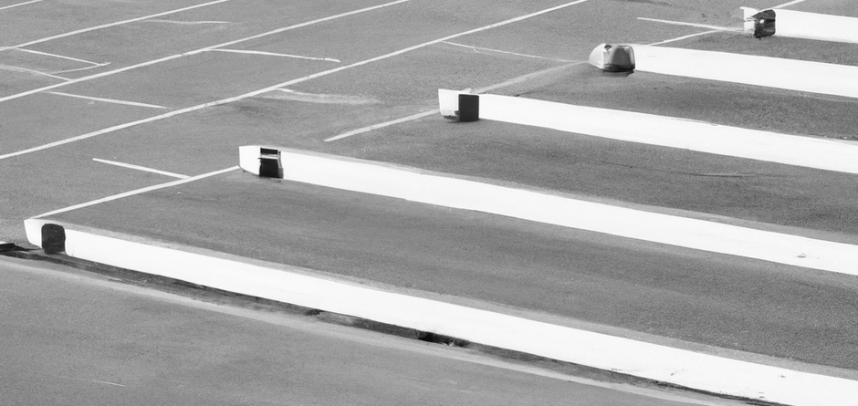
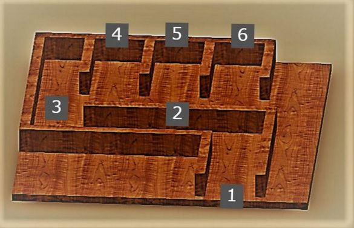
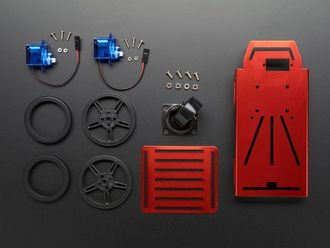
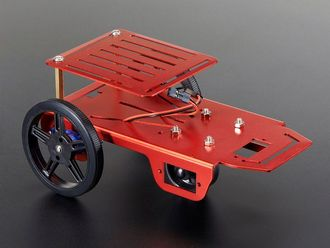
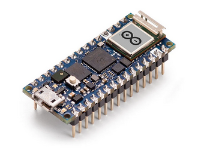
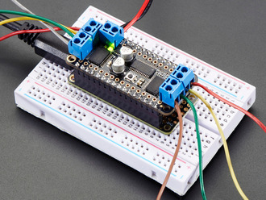
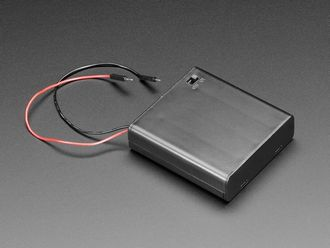
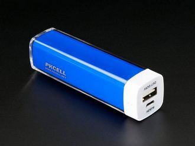
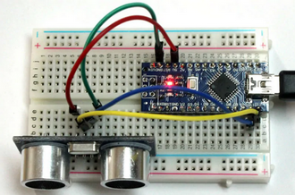
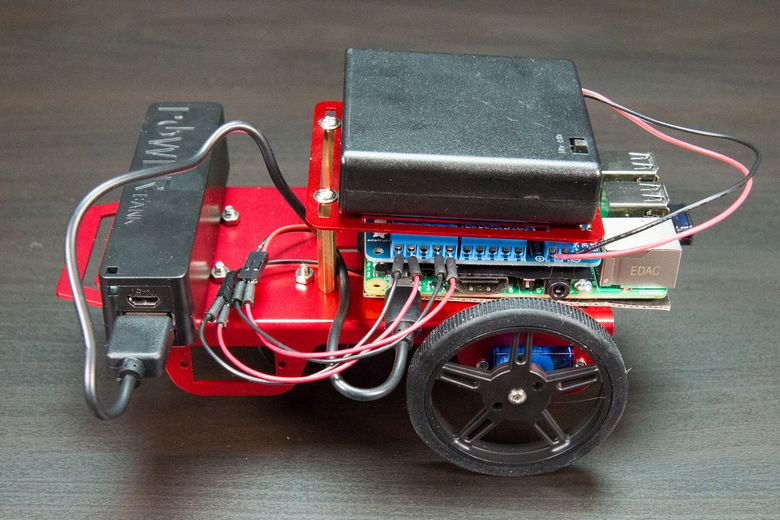

Automated Parking System
[Project Description]
Introduction
Parking systems have a long history following the invention of vehicular transportation. Interestingly, some airports and parking garages have introduced robot valets capable of parking your car for you [1]. All you need to do is drop off your car at a designated spot, and the robot handles the rest! These innovations in automated parking systems have led to increased parking efficiency, optimized space utilization, and reduced traffic congestion.
In this project, your team will have the opportunity to build your own automated parking system using tools available within the ARM community while showcasing your problem-solving and creative thinking skills. With this parking system, you will construct a functional autonomous vehicle on a pre-designed chassis that you will program to park perpendicularly into a parking space.
How it works
A parking course setup would be provided, as is depicted below:

The vehicle is placed at (1) and is required to navigate from that start point through the path denoted by (2). Upon reaching the (3) junction, the vehicle is required to park in any of the spaces denoted (4), (5), or (6) in a perpendicular fashion (i.e., head-first).
Here's the catch
Pseudo-cars would be placed in one or two of the parking spaces - implying that not all the spaces would be available. Thus, your vehicle, using sensors, would have to determine which parking space is free before proceeding to park in that space.
Pre-design chassis
As mentioned, you will be provided with the parts of a pre-designed vehicle chassis on which to develop the mechanisms necessary to address this challenge. [2]
 As displayed above, the parts of this chassis are:
1. 2x Wheels
2. 2x DC Motors in MicroServo shape [3]
3. Support Wheel
4. Metal Chassis
5. Top Metal Plate with mounting hardware
Creating the vehicle
In addition to the parts above, you will be provided:
1. Arduino Nano RP 2040 Connect [4]
 A Raspberry Pi 2040 board made to fit the Arduino Nano form factor making it a small board with big features. This will serve as the project’s microcontroller.2. DC+Stepper Motor HAT [5]
 Since the microcontroller has limited PWM pins, we use a fully-dedicated PWM driver chip to both control motor direction and speed over I2C. You will use this to drive the two DC motors you are provided with.3. 4 x AA Battery Holder with On/Off Switch [6]
 A nice portable battery holder for the rechargeable AA batteries that will power the DC motors. You will be provided 4x AA batteries along with their charger.4. USB Battery Pack - 5V 1A Output [7]
 A smaller-sized rechargeable battery pack for the Raspberry Pi containing a 2200mAh lithium-ion battery. You will use it to provide power to the Pi portably. It comes with a microUSB connector which you would use to charge the battery pack.5. 3x Ultrasonic Sensors [8]
 Remember the sensory detection spoken of earlier? You would be provided with three (3) ultrasonic sensors to this effect. You are free to mount them in whatever way would aid your creative process.For inspiration on how to put all of this together, follow the relevant steps of this assembly. With minor differences due to variation in the board used and absence of ultrasonic sensors, you may end up with:

Ready for action! (or for parking : )
Thinking about software
Believe you me, the build is the easiest part. Now, you have to think about basic code and algorithms to establish the rudimentary motion of the robot and eventually tackle the parking problem!
Owing to the uniqueness of the board being used, you can write your code in either Python or Arduino C. For the Pythonistas, included in the Adafruit_CircuitPython_MotorKit are library examples of basic scripts to move the robot. However, be sure to have followed the motor Hat guide software installation.
Measuring Success
Project success would be measured on the following criteria:
1. Valid parking: Your vehicle should park fitted within the parking space, and not partially, or awkwardly so.
2. Time taken to park: Your vehicle park should park in reasonable time and not take lightyears to do so.
3. Efficiency of locomotion: Your vehicle should generally move smoothly, regulate its speed, and turn gracefully. (Remember: it’s your code behind the wheel ; )
4. Obstacle avoidance: It must say on its path, not constantly hitting walls and other [pseudo] vehicles.
References
1. A. K. Nayak, H. C. Akash and G. Prakash, "Robotic Valet Parking System," 2013 Texas Instruments India Educators' Conference, Bangalore, India, 2013, pp. 311-315, doi: 10.1109/TIIEC.2013.62.
4. Arduino Nano RP2040 Connect with headers — Arduino Official Store
8. Complete Guide on Arduino & HC-SR04 Ultrasonic sensor | ElectroRules